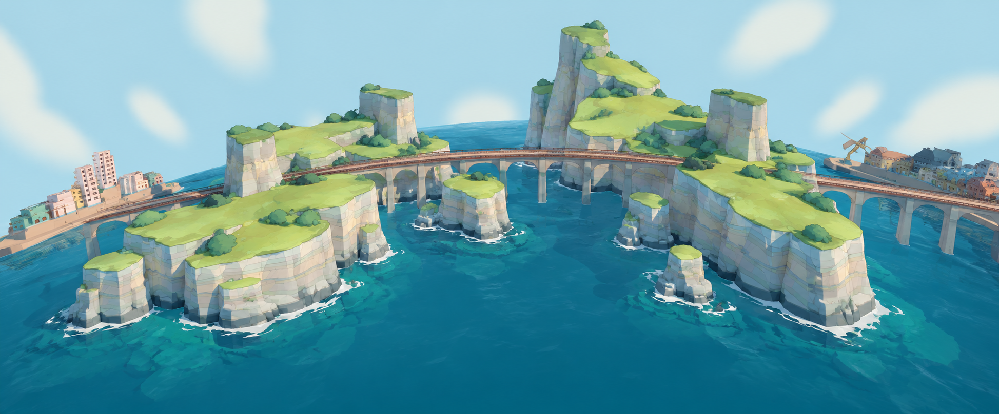

<!doctype html><html><meta charset="utf-8"><title>十二门徒 山势与真实桥轨对照</title><style>body{margin:0;background:#b7dce9;font:14px system-ui}nav{position:absolute;top:0;max-width:calc(100vw - 24px);background:#fff9;padding:12px;z-index:2}button,a{margin:4px}pre{font-size:10px;max-width:760px;max-height:44px;overflow:auto;white-space:pre-wrap}</style><aside style="position:absolute;bottom:12px;right:12px;z-index:3;background:#fffc;padding:6px"><div>目标参考（非实机）</div></aside><nav>正式同工厂·独立球面样区（非完整游戏）<button data-view="overview">总览</button><button data-view="bay">海湾</button><button data-view="side">岩壁</button><button data-view="rim">崖口近景</button><button id="bare">裸模开关</button><a href="?before=1">修改前</a><a href="?">修改后</a><a href="../../../?autostart=1">正式游戏</a><pre id="info">构建中</pre></nav><script type="importmap">{"imports":{"three":"../../../vendor/three.module.js"}}</script><script type="module">
import * as T from 'three';
const before=new URLSearchParams(location.search).has('before');
const {buildTwelveApostlesTarget}=await import(before?'./before.js':'../../../src/world/twelveApostlesTarget.js');
const scene=new T.Scene();scene.background=new T.Color('#b7dce9');const renderer=new T.WebGLRenderer({antialias:true});renderer.setSize(innerWidth,innerHeight);renderer.setPixelRatio(Math.min(devicePixelRatio,1.5));renderer.outputColorSpace=T.SRGBColorSpace;renderer.toneMapping=T.ACESFilmicToneMapping;renderer.toneMappingExposure=1.15;document.body.append(renderer.domElement);
let bare=false;document.querySelector('#bare').onclick=()=>{bare=!bare;for(const rock of result.rocks){rock.material.vertexColors=!bare;rock.material.color.set(bare?0xd5d7d5:0xffffff);rock.material.needsUpdate=true;for(const ch of rock.children)ch.visible=!bare;}renderer.render(scene,camera);};scene.add(new T.HemisphereLight(0xe9f4ff,0x647265,2));const sun=new T.DirectionalLight(0xfff6db,2.6);sun.position.set(-130,240,100);scene.add(sun);
let railContext=null;try{const {loadRailContext}=await import('./rail-context.js');railContext=await loadRailContext(T);}catch(e){console.info('Actual rail context pending root integration',e.message);}
const R=railContext?.radius??160,curve={getLength:()=>Math.PI*2*161,getPointAt:u=>new T.Vector3(Math.sin(u*Math.PI*2)*161,Math.cos(u*Math.PI*2)*161,0),getTangentAt:u=>new T.Vector3(Math.cos(u*Math.PI*2),-Math.sin(u*Math.PI*2),0)},railPoints=railContext?.railPoints??Array.from({length:2024},(_,i)=>curve.getPointAt(i/2024));
if(!railContext?.providesOcean)scene.add(new T.Mesh(new T.SphereGeometry(R,128,64),new T.MeshStandardMaterial({color:0x208aab,roughness:.65})));
const result=buildTwelveApostlesTarget({parent:scene,railCurves:railContext?.railCurves??{red:curve},railPoints,waterAt:railContext?.waterAt??(p=>p.clone().normalize().multiplyScalar(R)),referencePoint:railContext?.referencePoint??new T.Vector3(0,160,8)});
if(railContext)await railContext.install(scene);
const line=new T.LineLoop(new T.BufferGeometry().setFromPoints(railPoints),new T.LineBasicMaterial({color:0x713f30}));if(!railContext)scene.add(line);
const camera=new T.PerspectiveCamera(52,innerWidth/innerHeight,.1,1500);camera.up.set(0,1,0);function view(v){camera.position.set(...({overview:[0,255,-185],bay:[0,205,-130],side:[80,205,-105],rim:[65,210,-115]}[v]));if(v==='rim'){const r=result.rocks.find(r=>r.userData.apostleMass==='front-right');const b=new T.Box3().setFromObject(r),c=b.getCenter(new T.Vector3());camera.position.copy(c).add(new T.Vector3(12,26,-32));camera.lookAt(c);}else camera.lookAt(0,160,0);renderer.render(scene,camera);}document.querySelectorAll('button[data-view]').forEach(b=>b.onclick=()=>view(b.dataset.view));view('overview');renderer.setAnimationLoop(()=>renderer.render(scene,camera));window.__apostles={scene,camera,renderer,report:result.report,view};info.textContent=JSON.stringify({version:result.report.version,built:result.report.built,triangles:result.report.triangles,masses:result.report.masses.map(m=>({id:m.id,minRail:m.minRail,solved:m.wfc?.solved}))});addEventListener('resize',()=>{camera.aspect=innerWidth/innerHeight;camera.updateProjectionMatrix();renderer.setSize(innerWidth,innerHeight);renderer.render(scene,camera)});
</script></html>
